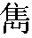

『佩文韻府』『駢字類編』等龐然たる大作、本を見た事がありますが引っくら返へして赗んだ事は今までなかった。支那文學跶門家でなければ購藏する必要もなからうと思ひます。併し『大辭典』編輯の爲めに手頃の本も知りません。
『辭源』と『通俗編』丈で涇ませるなら余り貧乏だと思ふ。其他、『子史精華』と『讀書記數略』とから必要だと思ふ奴をつまみだして入れたらどうです。或は『駢雅訓纂』（『駢字類編』よりも簡明だ）からも、少々取り入れる可しだ。
『白嶽凝焓』をば未だ見た事ないが併し送らないで下さい。内山書店に屹度瘄るのだらうと思ひます。
洛文 頓首 五月十一日
增田兄几下
[译文]
《佩文韵府》[121]、《骈字类编》[122]等庞然巨著，书是见过的，却从未反复翻阅过。我以为如非中国文学专家，则毋须购藏，但为编辑《大辞典》[123]，则正适用亦未可知。
如仅用《辞源》、《通俗编》[124]来对付，我以为太贫乏。此外，可从《子史精华》[125]与《读书记数略》[126]中摘录些认为必要的东西放进去如何？或从《骈雅训纂》[127]（比《骈字类编》简明）亦可略为采择些。
《白岳凝烟》[128]尚未看过，但请勿寄。我想内山书店一定会贩来的。
洛文 顿首 五月十一日
增田兄几下
注 释
[121] 《佩文韵府》 分韵编排的辞书，清代张玉书奉康熙敕编，共五五六卷。
[122] 《骈字类编》 分类编排的辞书，清代张廷玉等奉康熙敕编，专收二字合成的词语。分为十三门，共二四〇卷。
[123] 《大辞典》 当时增田涉等拟编的汉语大辞典。
[124] 《通俗编》 清代翟灏撰，收集日常通俗词语，说明其源流演变，分天文、地理、时序等三十八类，共五千余条。
[125] 《子史精华》 类书，清康熙时辑，收子史中名言

语，分类排比而成。分三十部，共一六〇卷。[126] 《读书记数略》 类书，清代宫梦仁编，集古书中的故实，“分类隶事，各以数为纲”。共五十四卷。
[127] 《骈雅训纂》 清代魏茂林所作《骈雅》的注本。《骈雅》，训诂书。明代朱谋撰。收集古书中双音词语，依《尔雅》体例，分条解释。
[128] 《白岳凝烟》 山水画集，清代汪次侯作。康熙五十三年（1714）刊行，1934年东京文求堂影印出版。